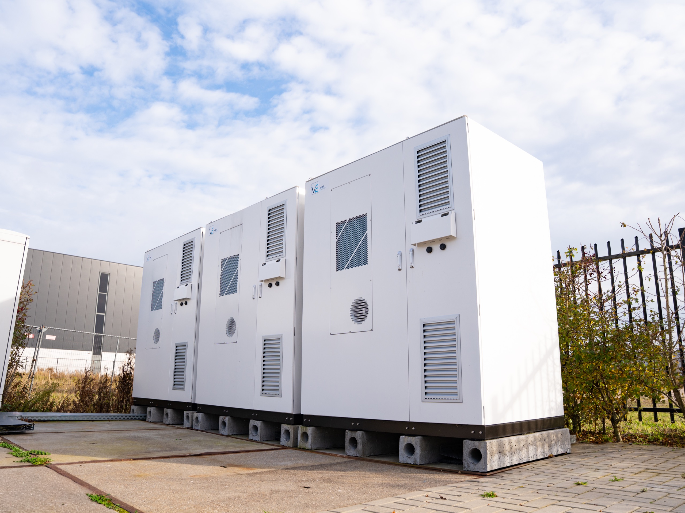

Steeds meer bedrijven lopen vast doordat hun netaansluiting geen ruimte meer biedt voor groei. Vibe Energy maakt extra capaciteit vrij op uw bestaande aansluiting — meer ruimte om te groeien, lagere energiekosten en geen jaren wachten op de netbeheerder.
U wilt uitbreiden, elektrificeren of laadpleinen plaatsen — maar uw aansluiting zit aan zijn grens. Plannen vertragen, investeringen blijven liggen en groei valt stil. Niet door uw ambitie, maar doordat het net vol zit.
Uw vraag naar vermogen groeit van alle kanten tegelijk — vaak sneller dan begroot.
De netbeheerder geeft geen extra vermogen. In congestiegebieden zit de wachtrij muurvast.
Een zwaardere aansluiting laat jaren op zich wachten. Zolang staan uitbreiding, elektrificatie en nieuwe laadpunten stil.
U betaalt maand na maand te veel voor piekvermogen dat slimmer is op te vangen.
Investeringen, vergunningen en klantafspraken hangen af van vermogen dat er nu niet is.
U hoeft niet te wachten op een zwaardere aansluiting. Vibe Energy maakt extra capaciteit vrij op uw eigen locatie, zodat u kunt blijven groeien, elektrificeren en laden. Wij ontwerpen, bouwen én beheren het hele systeem — u heeft één aanspreekpunt en hoeft zelf niets uit te zoeken.
— Eén partner. Van advies tot beheer.
Lagere inkoop, direct rendement. Eigen opwek levert vermogen precies waar u het verbruikt.
Capaciteit wanneer u die nodig heeft. De batterij vangt pieken op en verschuift vermogen naar uw drukste momenten.
Maximaal rendement uit elk onderdeel. Slimme software verdeelt opwek, opslag en verbruik realtime binnen uw aansluiting.
Meer laadpunten zonder verzwaring. Laden gebeurt automatisch binnen het beschikbare vermogen.
Ruimte om te groeien, te elektrificeren en te laden — binnen dezelfde aansluiting.
vs. contractwaarde aansluitingGeen aanvraag en geen wachtrij bij de netbeheerder. U kunt meteen door.
vs. 24–84 mnd netverzwaringVan eerste scan tot werkend systeem — meestal binnen één kwartaal operationeel.
Vibe-projecten 2023–2025Vibe investeert, u profiteert direct van meer capaciteit en lagere kosten.
standaard contractvormSituatie: een producent wilde de productielijn uitbreiden, extra koeling plaatsen en meer EV's laden. Probleem: de netbeheerder gaf 30 maanden wachttijd. Aanpak: Vibe maakte capaciteit vrij op de bestaande aansluiting — 1.500 kWh opslag, EMS, 6× DC-laders en 750 kWp zon. Resultaat: live binnen het kwartaal, de productie kon door.
Bereken uw businesscaseCijfers indicatief · uitkomst hangt af van locatie, vermogensvraag en groeiplan.
Een quickscan op uw locatie geeft het snelst een concreet antwoord.
Stel uw vraagBinnen korte tijd brengen wij uw aansluiting, verbruik en groeimogelijkheden in kaart. Zo weet u precies welke oplossing het meeste rendement oplevert.